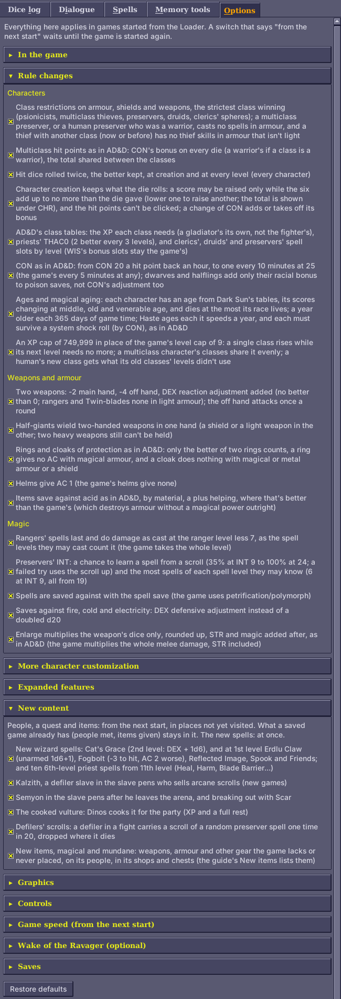
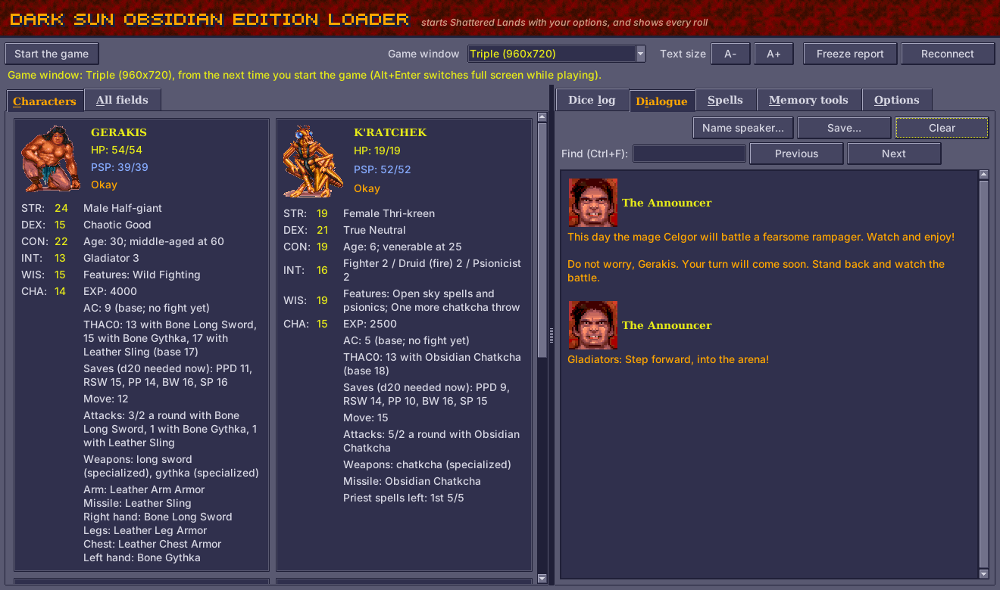
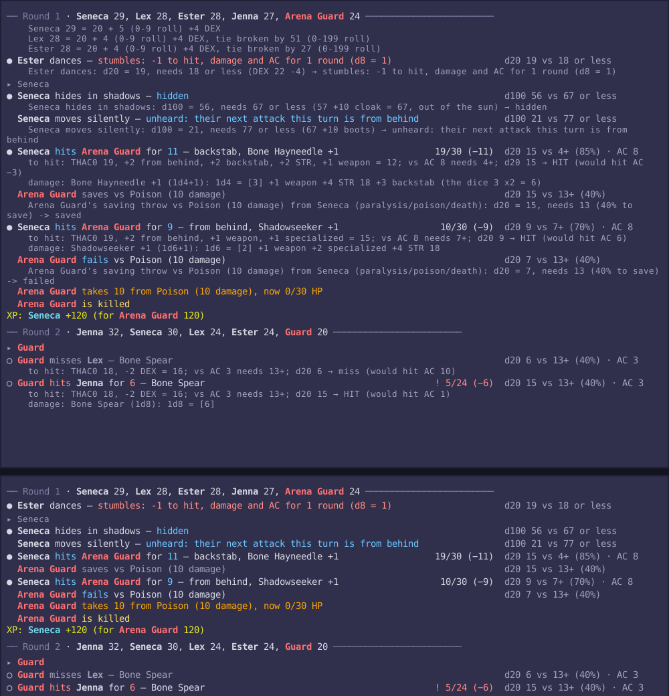

What it does
Eight families of changes. Most have a switch on the Loader's Options tab (each switch, its default and when it counts); Features and rules has every one in full.
- Shows what the game keeps hidden. Every roll as it happens, with what it needed and where each bonus came from (the dice log); a combat log over the map, names over figures and the Look box (In the game); THAC0, saves, thief skills, spell slots and charges on the game's own screens (Always on).
- Brings the rules closer to AD&D. Twenty-four switches for characters, weapons and armour, and magic, from class restrictions and levels past 9th to creature size and spell saves (Rule changes; in play, the player's guide).
- More ways to build a character. Weapon specialization, kits for every class and for some multiclass characters, STORE and RECALL, fuller starting gear (More character customization; every kit in Kits and weapon specs).
- Expanded play. Thieves with AD&D's skills who hide in shadows and pick pockets; the leader's CHA at shops and magical items to buy back (Expanded features).
- More of Athas. New wizard and 6th-level priest spells, new people, a quest, a last arena bout and new items (New content, with spoilers; without them, the guide's spell lists and new items; every item in Items).
- Graphics. The party's gear on its figures, shadows, dust, see-through figures, elves and half-elves of their own look, and magic items' icons that shine (Graphics).
- Quality of life. Better controls, more saves and characters, a game speed setting, crash, freeze and item reports and no manual check.
- Fixes the game's bugs. Some fifty, always on, from spells that never did what they say to the scripts' broken checks, and the rules it got wrong (The game's bugs, fixed).
What it changes on your computer. The game's own files are never modified: the Loader runs a patched copy of the game from its own folder, and writes to the game folder only your saves and characters. Every file it writes, and how to update or back up, and what happens to your saves: Updating, backups, saved games and the Loader's files.
Requirements
- Windows and the GOG release of Dark Sun: Shattered Lands (its
DSUN.EXEis 611,408 bytes; with another version the Loader starts the game without the dice log and says why). The Loader runs it in the DOSBox that comes with the GOG release. - 64-bit Python 3.8+ (32-bit Python can't read 64-bit DOSBox's memory), with no extra packages. The
.batfiles offer to install it (One-time setup). - Linux: the dice log and the Loader's window can follow a DOSBox you start yourself, if you can read other processes' memory (root, or
kernel.yama.ptrace_scope=0); the.batfiles, Start the game and the Python install are Windows only. macOS isn't supported. - Wake of the Ravager (optional; GOG sells it with Shattered Lands): the 6th-level priest spells use its icons and pictures, read from your copy as the game starts; without it they have the Loader's own. The Loader looks beside Shattered Lands and in GOG's usual folders; the Options tab's Wake of the Ravager section says whether it found it, and Choose its folder... points it anywhere else.
Suggested system requirements
DOSBox runs the whole game on one processor core, so what counts is the speed of a single core, not how many there are. By game speed setting (suggestions, not tested limits):
| Game speed | Processor (one core's speed) | Memory |
|---|---|---|
| GOG's own (7,000 cycles) | anything that runs GOG's release | 2 GB |
| Faster (20,000 cycles) | a dual-core from about 2010 on, 2 GHz or more (Intel Core i3 or AMD Phenom II) | 4 GB |
| Fastest (35,000 cycles, the default) | a processor from about 2015 on, 3 GHz or more (Intel Core i5 or AMD Ryzen) | 4 GB |
The Loader itself (Python and its window) needs about 100 MB of memory and little processor time. A screen of 1920×1080 or more shows the game's window at Triple size beside the Loader's; on a smaller one choose Double. Fastest, the default, draws nearly every frame in time and is the smoothest. If the computer can't keep up, the sound crackles or stutters and the game slows instead of speeding up: choose the next setting down.
Running it (Windows)
One-time setup
- Download the latest release,
Dark-Sun-Shattered-Lands-Obsidian-Edition-<version>.zip, from the Releases page, and unzip it anywhere: the files you need are in itsDark-Sun-Shattered-Lands-Obsidian-Edition-<version>folder. (Or the project as it stands: on its GitHub page click Code → Download ZIP; the files are then in itsobsidian-editionfolder.) - Python: the first time you double-click one of the
.batfiles, it checks for a 64-bit Python 3.8 or later. If there is none, it asks whether to install it with Windows' own package manager (winget): that downloads the official, signed installer from python.org, for your user only, with no administrator rights. Answer Y, and when it's done, start the.batfile again. (If you'd rather do it yourself, or winget isn't there, install the 64-bit Python from https://www.python.org/downloads/ and tick "Add python.exe to PATH" on the installer's first screen.)
"Open File - Security Warning" ("The publisher could not be verified"): Windows asks this for any .bat file unzipped from a download, since a .bat file can't be signed. To skip it altogether, before unzipping right-click the zip, choose Properties, tick Unblock and press OK. Otherwise press Run the first time: the Loader then takes the download mark off the files in its own folder (what that Unblock box does, and nothing outside the folder), so the other .bat files start without asking.
Nothing in the download is a packaged program to trust: the .bat files and the Python code in dsloader are plain text, and so is the source of the three built files, small DOS programs DOSBox loads (dos\dsclog.asm builds dos\DSCLOG.EXE; gameend.asm and umbplus.asm the two .COM files beside them).
Every time you play
- Double-click
Start Obsidian Edition.batin that folder. The Loader opens on its own. - On its Options tab, pick what you want: the rule changes, the new content, picking pockets, the combat log in the game and so on (see The Loader's window and Rule changes). They're remembered for next time.
- Press Start the game (top left).
That starts Shattered Lands (through GOG's own DOSBox) with the dice log helper loaded and your options in force, and the Loader picks it up once DOSBox is up. Your saves are the same ones the game normally uses. The first time, it looks for the game in the usual GOG folders; if it can't find it, it asks you where the game is installed and remembers the answer.
DOSBox opens in a window three times the game's size (960x720). Game window at the top of the Loader picks Single, Double, Triple, Quadruple or Full screen from the next start, and Alt+Enter switches between window and full screen while playing. Quadruple has DOSBox stretch its window with OpenGL; if your graphics driver doesn't take to that, pick Triple.
Load your game. The party's stats fill in by themselves, and rolls appear in the Dice log tab as they happen.
Other ways to start
Game and Loader in one double-click: Start Game with Dice Log.bat starts the game with the dice log and opens the Loader next to it, with the options as you last set them on the Options tab. With the game started the normal way instead (GOG's own shortcut), the Loader still shows the party, but the dice log will say the game was started without it.
Just the game, with the in-game additions, no Loader window: double-click Play Dark Sun (in-game rolls).bat. The dice log runs unseen and stops when you close DOSBox. It uses the switches on the Loader's Options tab as you last set them (the combat log, monster descriptions, picking pockets, the rule changes); the new items, the new people and the cooked vulture are there too. If anything goes wrong it says so in a message box and writes the details to play.log. Only one Loader (a window, or the in-game rolls) can start or follow the game at a time: a second one says which has it and leaves the game alone.
Checking a save file: drag a SAVEnn.SAV file from the game folder onto Show Save.bat to see the party it holds.
With Dark Sun Recompiled instead of DOSBox: the game translated into a program of its own (daaki85/darksun-recompiled), with the mod's patched game and helper built in. Unzip its darksun-recompiled-windows-x64.zip into this folder (so that recompiled\dsun.exe is here, or dsun.exe itself) or into its own darksun-recompiled... folder next to this one, and the Loader starts that program instead of DOSBox from then on, the dice log and the Loader's window attached as usual. As the game starts, the dice log says which one runs (... in DOSBox or ... as Dark Sun Recompiled and where it is). The game's own DSUN.EXE is never taken for it, even with this folder in the game's. A program elsewhere is named once, in a command prompt opened in this folder:
python -m dsloader launch --recompiled "C:\path\to\dsun.exe"
python -m dsloader launch --dosboxThe second line goes back to DOSBox (and stays there until --recompiled again). The program reads the game's data files from the GOG folder and the mod's dos folder as it would in DOSBox, and keeps its memory images (build\ds1o) next to itself. DOSBox's own settings (the window's size, full screen, the CPU speed, UMBPLUS.COM) don't apply to it. The program started on its own (double-clicked) finds this folder too, when it is in or beside it, and offers "Shattered Lands with the Obsidian Edition" among its choices, once the Loader has prepared the dos folder (the first start through the Loader does that).
Updating, backups, saved games and the Loader's files
Updating
Unzip the new release into a folder of its own and copy two things from the old folder into it: settings.json (your options) and the Named saves folder (each save's copy under its name, and the Replaced - copies a restore keeps, which may be the only copy left of a save). Your saves and characters are in the game folder (or its cloud_saves folder, where GOG keeps them when it has one), so nothing else needs moving. Then delete the old folder.
Backing up your saves
Back up your saves first. Before the first game with the mod, copy the save files (SAVE*, and SAVB*, SAVC* and SAVD* once you have them) and CHARSAVE.GFF somewhere safe: from the game folder's cloud_saves folder if it has one (the game reads its saves from there first), else from the game folder. The Loader never changes the game's own files, but your saves are written by the patched game: one with the new items ticked can hold item types the original game doesn't have, so load such a save with the Loader. To go back to the original game, start it the GOG way and load a save from before the mod.
Compatibility with older saves
Read this when you carry on a game saved with the original game or an earlier version of the mod; for a new game none of it matters.
Your saved games. A save from the original game, or an earlier version of the mod, loads and plays with every fix and rule change from the moment it is loaded: they're in the patched game and the Loader, not in the save, so effects already running follow them too (images, Armor's charges, Share Strength, Dispel Magic and the rest, from the next spell cast). The fixes stop the old bugs from happening, but what a bug already did stays in the save:
- A save isn't for an older version where a release changed what a save holds: 2.13.0, 2.13.2, 2.14.0 and 2.15.0 (its new items) did, so a save made with one of them or later doesn't load in the versions before it (a 2.14.1 save still loads in 2.14.0). Older saves load in newer versions as they are: a character keeps its age, and its roll is put on its sheet when the game is loaded.
- Share Strength and Dispel Magic: a character who kept Share Strength's strength after the power ended still has it (it shows on their Effects screen): load a save from before the power was used to be rid of it. One silenced by the preserver's Dispel Magic ("No spell use") casts again once it wears off.
- Ages: with ages on, each character in a save, the game's own party too, is given a starting age the first time the Loader sees them (the dice log shows the roll).
- Kits from earlier versions: a Healer keeps its sphere and is given the cosmos spells when the game is loaded (the dice log says so). A thri-kreen druid/fighter Wasteland Seer has no kit now: the kit is a druid/fighter/psionicist's.
- Thieves' Tools from an earlier version (Mirlon's or Kel's) do nothing: a thief picks pockets with the Pick Pockets button.
- Most PSP: a character's may go up once, the next time the game works it out (a level up, or a game starting): the game's own bonuses for CON, INT and WIS are counted right now, and the most only ever rises.
- Thornwall in an older save: in a save from 1.2.0 to 2.5.0 that has already been to the slave pens, the weapon rack is gone, so Thornwall never comes onto it (a new game has the rack). In a save from 2.13.4 or earlier that has already been to the arena, Thornwall is already on the rack (it now comes only after Semyon's tip).
- Kreenfang: in a save from 2.13.4 or earlier that has already been to the arena, it is likely still on the dead body by the stone arch, and the champions' Tohr-kreen brings another.
- Pehtucl's locked chest comes with a new game: in a save that has already been to the slave pens he still wears the Cloak of Protection, and the chest is the plain one.
- A save made with an earlier version while Kalzith was switched off (or when the Loader couldn't make its copy of the game's objects): in the slave pens, talking to Semyon may start Kalzith's conversation instead (the Loader now numbers its conversations the same whatever the switches). There's no undoing it in that save. One made with Kalzith on, the default, is unaffected.
- A new game whose arena fight never began (no announcer, and walking said NO PATH FROM HERE: a 2.4.0 bug) can't be mended: start a new one.
A new game is still the way to see all of the mod: kits, STORE and RECALL and fuller starting gear come with characters made with it, and much of the new content (Kalzith, Semyon, the vulture, the new items in the slave pens) is in the game's first areas. The new and changed gear the game's people carry and its chests hold comes only in areas the save hasn't been to: where the party has been, they keep what they had. A save from the original game has no kits, and what it has already been through stays as it was.
What the Loader writes
All in its own folder (beside Start Obsidian Edition.bat) but the saves:
| File or folder | What it holds |
|---|---|
settings.json | your options, and what the Loader remembers (who has had their pockets picked, speakers' names); if it is ever damaged, it is kept as settings.json.bad and the defaults used |
crash-logs | crash, freeze and item reports |
Named saves | a copy of each save under the name you gave it |
dosbox_dicelog.conf | DOSBox's settings for the game the Loader starts, written at each start |
play.log | what went wrong, when the game was started with Play Dark Sun (in-game rolls).bat |
dos | the Loader's helpers, and the patched copy of the game (DSUNLOG.EXE) with copies of its data |
layouts, .dsloader-search.json | only from the Memory tools: a layout you save there, and a memory search's results |
| the game folder | your saves (page 1 in the game's own SAVE files, pages 2 to 4 as SAVB, SAVC and SAVD) and characters in CHARSAVE.GFF |
Uninstalling
Delete the Loader's folder. Nothing of the mod is left in the game folder but your saves and characters: page 1's saves (SAVE*) and CHARSAVE.GFF load in the original game as long as they hold none of the new items (see above); the extra pages (SAVB*, SAVC*, SAVD*) are read only by the mod's patched game.
The Loader's window
The window has the party on one side and the logs and tools on the other, with Start the game, the game window's size, the text size, Freeze report (see reports), Reconnect (to find the game again) and Help (the manual, in your browser: these pages as web pages, from the manual folder, at its start page, this one) along the top. The party pane has two tabs:
- Characters (Alt+C): a card for each character, laid out like the game's View Character screen (The Characters tab).
- All fields (Alt+A): every field the layout maps, in a table, with rows of its own for the AC in a fight and what it's made of, THAC0 with each weapon and the saves now, and at the end the spell slots, thief skills and equipment.
The other side has the Dice log, Dialogue and Spells tabs (below), Memory tools (for mapping the game's memory, with Save layout and Reload layout: see DEVELOPMENT.md), and Options (Alt+O) with the Loader's switches, in sections that open and close: click a section's heading (or Tab to it and press Space or Enter) to open it, ▸ when closed and ▾ when open. Which sections are open is remembered. Everything there applies in games started from the Loader or its .bat files; a switch that says "from the next start" waits until the game is started again. The sections are In the game, Rule changes, More character customization, Expanded features, New content, Graphics, Controls, Game speed, Wake of the Ravager (optional) (where it is, for the 6th-level priest spells' icons and pictures: Requirements) and Saves (Saves under their names). The Options tab at a glance, in the player's guide, lists every switch with its default and when it counts.
Every switch is on by default, and the three choices start at the red ring under the chosen enemy, the game speed Fastest and the combat log in short; all are remembered for next time. Restore defaults, at the bottom of the tab, sets them all back (after asking). In a window too small to show the open sections, the tab scrolls (scrollbar, mouse wheel, or arrow and page keys once it has the focus).

The Characters tab
A card holds, from the top (scroll with the mouse wheel, or Tab to the cards and use the arrow and Page keys):
- the figure for their race and sex (as on the character creation screen, read from your install), their name, and HP and PSP (PSP in blue);
- their condition (New, for a character not yet played, Okay, Stunned, Out Cold, Dying, Dead, Animated, Petrified or Gone), then the spells and effects on them with the rounds or charges left:
Blur (22 rounds),Stoneskin (5 charges); - the character sheet: scores, sex, race and alignment, classes and levels, experience, AC (the one the game last used in a fight, with the base AC beside it), THAC0 with each weapon ready (
THAC0: 15 with Wooden Club, 14 with Wooden Bow (base 19)), the saves as the d20 needed now (see In the game), movement (Move: 12 (14 in a fight: Stalker)) and attacks, with each weapon where specialization changes them (Attacks: 5/2 a round with Obsidian Chatkcha); the kits (Kit: Wild Fury; for the game's own party, its features:Features: Wild Fighting), and the weapon specs with their rank (Weapons: long sword (specialized)); with ages on, their age, its category and the next to come (Age: 45, middle-aged; old at 53); - what they wear and hold, by the game's own slot names ("Right hand: Bone Long Sword"; "Carried" for the backpack), with each item's material and plus;
- last, spell slots for spellcasters (see below), thief skills for thieves, and for rangers, with hiding to backstab on, their chances to hide and move silently (
Ranger skills now).
What some of its lines mean:
Spell slots. Priest spells left: 1st 5/5, 2nd 3/3, 3rd 2/2 means five first-level priest spells can still be cast out of five, and so on. Casting a spell uses one slot of its level, and resting fills them again. Wizard slots belong to preservers; priest slots belong to clerics, druids and rangers. A multiclass character's classes add up, for example a druid/preserver has both. The "most" is worked out the way the game does it when it refills them (its tables are read from memory):
- Preservers: from their level only.
- Clerics and druids: from their level plus a WIS bonus.
- Rangers: from their level only, with their first slot at level 8.
With AD&D's class tables on (the default), clerics', druids' and preservers' come from AD&D's tables instead. Some kits have more or fewer, and the Veiled Robe adds a wizard slot at spell levels 1 to 3.
The game's WIS bonus doesn't depend on level, so it gives a 2nd-level druid with WIS 19 slots at the 2nd to 4th levels too, though a druid that level casts only 1st-level spells. Those aren't shown (here or in the game): only the spell levels the character's class levels reach, as in AD&D, where the WIS bonus counts only at levels the priest can cast. For a human dual-class character, a later class counts only while its level is below the first class's.
AC. The AC shown (Current AC on All fields) is the one the game last used for each character in a fight (armour, DEX and spells included), and the rows under it say what it was made of: armour and shield (and spells that take their place, such as Spirit Armor and Magical Vestments), DEX (the game's table: −1 at 15 down to −6 at 24; not counted when attacked from behind), and spells, rings (the rings of protection) and anything else. They show "-" until the game has worked out that character's AC in a fight.
Scores. Ability scores such as STR 24 (20 without spells) show the score now and, in brackets, the character's own score when a spell (Strength, for one) has raised it. The character's own score already includes the racial adjustment: a half-giant's 20 + 4 shows as 24.
The Spells tab
What each wizard and priest spell and psionic power does, read from the running game's records: its damage dice and kinds (and that damage stops growing at caster level 10), its saving throw (which of the five, any modifier, whether the d20 counts double, and whether saving halves or stops the damage), the effect it gives and what that does, how long it lasts, and each party member's caster level for it. With the new spells on, the mod's spells are listed too; a 6th-level priest spell built on another spell's record (Harm on Cause Critical Wounds', say) has its lines written out, as the record would mislead. Show picks wizard, priest, psionic or all, and Only spells the party has a caster level for leaves out the rest. Save... writes it to a text file. It's filled when you open the tab (or press Refresh) while the game is running.
The Dialogue tab
Everything the game shows in its dialogue window, one entry per window of text, with the replies offered numbered underneath (and the list's title, such as "Answer Yes or No", above them), and then the one you picked: You chose: No.

Who's speaking. The game's dialogue window has only a portrait, never a name, so a speaker shows as Portrait 57 until the log learns its name from a conversation started on it (in the pens, portrait 5 becomes Kurzak) or you name it: right-click the name line in the Dialogue tab, or press Name speaker... (it names the latest speaker). Your name wins over a learned one and replaces the number on every line, the ones already shown included; leave it empty to go back to the number. Names are kept in settings.json, and the command-line log uses them too. Portrait 119 is The Announcer, as the game calls him. Text shown without a face (the emblem instead) is Narration. (How names are learned.)
Each entry shows the speaker's portrait, as the game's own dialogue window does. Portraits and the title's lettering are read from your installed game at run time (GPLDATA.GFF and RESOURCE.GFF in the install folder the Loader remembers); nothing from the game is copied into the Loader. Without the game installed the window uses its own lettering and no portraits.
The dice log
![The Loader during the arena's opening show, in the readable layout: the Characters tab with the game's own party (Gerakis's Features: Wild Fighting and his age; K'ratchek's chatkcha 5/2 attacks a round and her open sky spells and psionics), and the dice log's last rounds: each attack with its outcome first, the d20 and the AC in columns and the working under it, round 5's initiative, the Rampager's two hits and its acid (the Defiler's save made), the Defiler's death, the party's PSP back, and the fight's summary](../docs/dicelog.png)
Finding something. Type a word in Find above the log (Ctrl+F puts you there) and press Enter: every match lights up, the log jumps to the first, and the count beside it says which one of how many you're on. Enter or Next goes on to the next, Shift+Enter or Previous back, round the end either way; Escape clears it. Case doesn't matter, and hidden details aren't searched (tick Show details to include them). While you're looking at a match the log stays put as new lines come in. The Dialogue tab has the same box.
The readable layout (on unless Readable layout, above the log, is unticked; remembered): each event on a line of its own with what came of it first, ● Seneca hits Arena Guard for 11 — backstab, Bone Hayneedle +1, then in columns at the right the HP it left (19/30 (−11), marked ! and coral when a party member is down to a third) and the roll (d20 15 vs 4+ (85%) · AC 8). Under it, smaller and dim, the working: the to-hit sum against the target's AC with the lowest AC the roll would have hit, the damage dice, a save's line in full, each initiative score. A party member's line has a filled pip, a monster's a hollow one; a round starts with a rule and its order, a turn with ▸ and the name. The outcome's colour is the party's view of it: sky blue for good (the party hits, a monster fails its save), coral for bad (a monster hits, a party member fails), dim for a miss or a monster's save, gold for a kill. Show details hides the working as before. The log's own lines are kept as written: unticking the layout shows them again, and Save... and the crash and freeze reports use them.
A fight's summary. As a fight ends (the game's fight flag down for 2 seconds; each arena wave gets its own) the log sums it up: Fight over: 3 rounds, 4 kills; the party dealt 61 damage and took 19, then a line for each member, Seneca: 2 of 2 attacks hit, 30 dealt, 1 kill. A kill goes to whoever hurt the creature last, a spell's damage to its caster, Magic Missile's too (only the party's own spells count). The readable layout shows it as the fight's close, every member's line shown.

Reading the lines as written. Lines at the left edge are the events: a round starting, whose turn it is, attack rolls, saves, spells, kills. Lines indented two spaces are their results (damage, HP left); lines indented four spaces are the details: the sums behind a THAC0, a save's modifiers, the initiative scores. Untick Show details, above the log, to hide the details and keep the rest; they come back when it's ticked again. In the window, each kind has its colour (hits green, misses grey, damage amber, saves blue, turns sand, rounds underlined with a gap above), and the words say the same thing (accessibility). Names stand out in bold: each party member in a colour of their own (cyan, magenta, peach and white, by place in the party) and every monster and other creature in red, so who acts and who is hit can be followed down the log.
Every line, and what it means. The dice log, line by line: fights, spells and saves, checks and thief skills, hit points and levels, character creation and the rest, each kind of line with an example.
The log keeps its newest line in view. Scroll up to read back and it stays where you are; scroll to the bottom again and it follows the new lines once more. The Dialogue tab does the same.
Show unlabelled rolls, beside it, also lists everything else the game randomises (creatures wandering, animations and so on), as raw numbers with where in the game's code they came from, and each AC the game works out for an attack with its parts (base, armour, DEX, the rest). It's noisy, but useful for finding more rolls worth labelling.
Accessibility
The Loader aims at the AODA's standard for software people read, WCAG 2.0 level AA:
- Contrast: every colour used for text has at least 4.5:1 contrast with its background (the game's lighter stone is kept for bevels, not behind text).
- Colour is never the only signal: log lines say
HIT,miss,savesand so on in words, and changed bytes in the record view are underlined as well as highlighted. - Text size: A+ / A- at the top, or Ctrl +, Ctrl - and Ctrl 0 (back to normal), enlarge or shrink all text up to 2.5 times. The Options tab's longer lines wrap to the window rather than run out of it.
- Keyboard: Tab and Shift+Tab move between controls, and the one with the keyboard focus is outlined in yellow. Ctrl+Tab switches tabs, as do Alt+L (Dice log), Alt+I (Dialogue), Alt+S (Spells), Alt+M (Memory tools) and Alt+O (Options), and on the party side Alt+C (Characters) and Alt+A (All fields).
- In the game, Tab and Enter choose and attack an enemy in a fight with no aiming of the mouse (see Choosing an enemy).
- The game's font is only used for the window's title: it's a 9-pixel bitmap font, fine enlarged as a heading but harder to read than ordinary text, so everything else is in the system's fonts. The combat log in the game uses a small font of the Loader's (8 pixels a line) (its header, buttons and filters in the game's); the same lines are in the Dice log tab at any text size.
- Screen readers: tkinter's windows are not read well by screen readers. Save... on the Dice log and Dialogue tabs writes the log to a text file, and
python -m dsloader dicelogprints the same log (dialogue included) in a command prompt, which screen readers do read.
When something goes wrong
Troubleshooting
- Windows warns about the
.batfile ("Open File - Security Warning"): see One-time setup. - An antivirus program blocks or quarantines the Loader. The Loader reads and writes DOSBox's memory while you play, as debuggers and game trainers do, which some antivirus programs distrust. Allow the Loader's folder, or start just the game with
Play Dark Sun (in-game rolls).batto see whether the trouble is the Loader's window. - The game runs slowly, or the sound stutters: choose a lower game speed.
- Walking looks jerky with the whole party in view: steady pace is skipping pictures so no one slows down. Fastest game speed on a quick computer skips almost none; untick steady pace to see every picture at the game's slower walk (game speed).
- The mouse is stuck in the game's window. DOSBox, as GOG sets it up, takes the mouse at the first click in its window (that click does nothing in the game). Ctrl+F10 lets it go; a click in the window takes it again.
- "DOSBox can't be given a folder whose path has ... in it" as the game starts: DOSBox reads its configuration in Windows' code page, and the game's folder or the Obsidian Edition folder has a letter that code page hasn't (from another alphabet, say). Move the game, or the Obsidian Edition folder, to a folder whose path has only ordinary letters for your Windows.
- The Loader shows no party or rolls: check that Python is the 64-bit one (Requirements) and that the game was started from the Loader or one of its
.batfiles.
Known issues
Being looked into; a crash report, a save from just before and what you were doing help (see Reporting a problem):
- The game can stop with an error after a fight in the arena. The Loader writes a crash report; load the last save to go on. (Listed since 2.5.0; its cause isn't known yet.)
- In a long session, figures can vanish from the screen and the game then freeze. Three causes are fixed: one in 2.7.0; the Loader's new outfits filling the game's picture store after many changes of gear in one area (the Loader now reuses the store's room: what the party wears); and the game's own 300 picture slots running out in a busy area, so that items, bodies, figures and doorways stopped being drawn (a slot nothing uses is now reused: the game's bugs). If it still happens, press Freeze report on the Loader before closing DOSBox. (Reported in 2.6.0.)
Crash, freeze and item reports
When something goes wrong, the Loader saves a report in the crash-logs folder (beside Start Obsidian Edition.bat), named for the time, and says so in the dice log (or, with Play Dark Sun (in-game rolls).bat, in a message box). Send it along with what you were doing just before (see Reporting a problem). Reports need the game started from the Loader or one of its .bat files: from GOG's own shortcut the Loader can't see how the game closed. Every report holds the Loader's switches, the last 300 lines of the dice log and the last 80 of the dialogue (which name your characters), and the table says what else. DOSBox's own messages in a crash report can name the folders the game is in, so read a report before you post it anywhere public.
| Report | When | What else it holds |
|---|---|---|
Crash (crash-2026-10-04-213012.txt) | the game stops with an error, or DOSBox closes while the game still runs | how DOSBox closed (its exit code), what the game left on the screen and the message it last wrote, with the calls that led to it; how long the game ran and the game speed; DOSBox's own stdout.txt and stderr.txt, if it wrote them; any writes into the game the Loader refused as unsafe; the game's memory at the last reading and at its lowest |
Freeze (freeze-2026-10-16-213012.zip) | you press Freeze report | where the game was running for the last few seconds (the helper notes it about 4 times a second), whether the game's timer and the map still move, the helper's own state, and a copy of the game's memory (about 1 MB: the party, the map and the fight, nothing outside DOSBox) |
Item (item-2026-10-18-213012.txt) | an item vanishes from the party | the item, who had it and where, what its record in the game's item table says now (freed, or reused for another item), the game's time, the region, whether a fight was on and whose turn, the item's record when last seen and now, and its type's record, and the owner's and the party's items |
Memory running low. The game has little memory to spare, and in a long session it can run out ("Out of memory in OEOpenGraph"). The Loader watches it, and if it gets low with the map up, the dice log says so: save and restart the game soon, as a fresh start has all of it back.
A crash. When the game stops with an error (such as "Null pointer assignment"), DOSBox waits with the game's message on screen ("The game stopped with an error", then press a key) rather than closing over it. Some of the game's own errors (its memory manager's ABEND: ..., its script engine's Mel Fatal Error) are printed while the screen is still in graphics and wiped as the game quits; the helper keeps what the game last wrote, so the report has them anyway. The dice log also says how DOSBox closed: DOSBox closed: it crashed (an access violation, code C0000005h) means DOSBox itself failed, not the game. If DOSBox closes while the game is still running (after a freeze, DOSBox stopping with an error of its own, or its window's button), the report says the game didn't end on its own. A game ended from its own menu (Exit to DOS) writes none.
A freeze. If the game stops responding but DOSBox stays open, leave DOSBox as it is, switch to the Loader and press Freeze report. The Loader watches the game for a second, then saves the zip and says where.
An item gone. The Loader watches the party's items (every member's, worn or carried). When one is gone from the whole party for two seconds with nothing ordinary to explain it, it saves the report (loading a game starts the watch afresh):
Leather Inixhide +1 is gone from Gerakis's chest: its record is empty: the game freed it (destroyed, used up or discarded). An item report is saved in ...The ordinary ways for an item to go pass in silence: dropped, put in a chest, given, sold or stolen; used up or taken for a quest; a spell's weapon (Shillelagh, Flame Blade) ending; a weapon that broke; an item handed to another member or moved between areas. An item the game destroys (acid, Detonate's blast) is reported too, so the loss is on record.
Reporting a problem
Open an issue on the project's Issues page, saying what you were doing, the version (the Loader's title bar), and attaching the crash, freeze or item report if there is one (all three are in crash-logs). A save from just before it happened helps most of all.